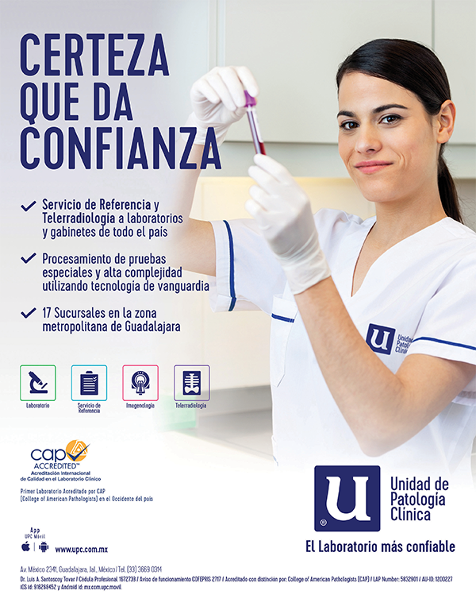

Unidad de Patología Clínica
Av. México 2341
Col. Ladrón de Guevara
C.P. 44650 Guadalajara, Jal.
Centro de Atención Telefónica: (33) 3669 0310
Medicina Industrial: (33) 3669 0334
lab@upc.com.mx ; imagenologia@upc.com.mx
www.upc.com.mx

Servicio de emergencia las 24 horas los 365 días del año en nuestros Laboratorios Centrales (sin costo extra)
Servicio de Referencia a laboratorios de todo el país:
(33) 3669 0314
(33) 3669 0311
referencia@upc.com.mx
Unidad de Patología Clínica cuenta actualmente con los Laboratorios Centrales y 18 sucursales para la recepción y toma de muestras, y entrega de resultados. Todas las muestras que son captadas se transportan a los Laboratorios Centrales para su procesamiento.
Los Laboratorios Centrales están compuestos por tres edificios de 3 pisos cada uno, conectados entre sí, diseñados y construidos especialmente para laboratorios clínicos y gabinete de imagenología. Contamos con amplio estacionamiento exclusivo para la comodidad de los pacientes.
Actualmente, en Unidad de Patología Clínica laboran un total de 258 empleados. Brindamos un servicio personalizado con nuestro grupo médico, compuesto por 28 Médicos Especialistas certificados por sus respectivos Consejos de Especialidad.
SUCURSALES
Aztecas
Av. Aztecas 280-3
Fraccionamiento Monraz
(33) 3642 3683
Beethoven
Av. Beethoven 5229-2
Col. La Estancia
(33) 3165 2374
Carretera a Tesistán
Av. Juan Gil Preciado 2001-2
Col. Los Robles
(33) 3364 0161
Centro Médico Puerta de Hierro
Av. Empresarios 150-1A
Col. Puerta de Hierro
(33) 3848 2106
Chapalita
Av. Chapalita 1300-A
Col. Campo de Polo
(33) 3647 4989
Circunvalación
Av. Circunvalación División del Norte 731
Col. Jardines Alcalde
(33) 3854 4730
Copérnico
MediCenter
Av. Nicolás Copérnico 3730-4
Col. Arboledas
(33) 3631 7363
Country
Av. Circunvalación Álvarez del Castillo 1360-G
Col. Chapultepec Country
(33) 3854 5043
Guadalupe
Av. Guadalupe 605
Col. Chapalita
(33) 3123 2861
Hospital Sta. María Chapalita
Av. Niño Obrero 1666
Col. Chapalita Oriente
(33) 3678 1442 (directo),
(33) 3678 1400 y (33) 3121 4050, ext. 517
Medicina Transfusional (Banco de Sangre)
(33) 3121 1683
Innovare
Av. La Verona 7412-8
Fracc. Villa Verona
(33) 9688 2105
Las Cañadas
Blvd. Bosques de San Isidro 1847-6
Col. Centinela
(33) 2267 0937
Niño Obrero
Av. Niño Obrero 998
Col. Jardines de San Ignacio
(33) 3121 9400
Santa Anita
Plaza Provenza Center
Av. López Mateos Sur 5565-3 y 4
Col. El Capullo
(33) 3686 2120
Tonalá
Av. Tonalá 147
Col. Francisco Villa
(33) 3691 7823
Torre Médica Providencia
Av. Pablo Neruda 3265-4
Col. Providencia
(33) 3640 4247
Valdepeñas
Av. de la Mancha 408-B y C
Col. Lomas de Zapopan
(33) 3616 5419
Valle Real
Av. Santa Margarita 5160-1
Fracc. Valle Esmeralda
(33) 3364 0647
FUNDACIÓN
En 1967 se reunió un grupo de médicos especialistas en las diferentes ramas de la Patología Clínica, encabezado por el Dr. Guillermo Santoscoy Gómez(†), con la finalidad de evaluar los cambios que se venían presentando en el laboratorio clínico debido a los avances tecnológicos de la medicina y por lo tanto deberían planear la adecuación de su estructura.
En enero de 1968 fue fundada Unidad de Patología Clínica (UPC) con el fin de formar un laboratorio integral que contara con todos los servicios de las diferentes ramas de la Patología Clínica, para ofrecer desde las pruebas más sencillas hasta las más modernas y sofisticadas.
El primer edificio de Unidad de Patología Clínica se ubicó en Escobedo 79, hoy Federalismo, entre Pedro Moreno y Av. Vallarta, frente al parque “De la Revolución”, conservando su ubicación hasta el año de 1974, fecha en que cambió sus instalaciones a Av. México 2341, colonia Ladrón de Guevara, Guadalajara, Jalisco, México, donde hasta la fecha continúa proporcionando servicios a la población general.
NUESTRA FILOSOFÍA
La Misión primordial de Unidad de Patología Clínica es brindar CERTEZA a pacientes, médicos y usuarios en estudios de laboratorio clínico e imagenología, a través de la más avanzada tecnología, médicos especialistas y personal movido por el espíritu de servicio auténtico, humano y ético, engrandeciendo así el legado de nuestros fundadores.
VISIÓN
Ser el laboratorio clínico y gabinete de imagenología más confiable de México.
POLÍTICA
Nuestra política es ofrecer servicios oportunos, eficientes y de excelente calidad.
FILOSOFÍA
En Unidad de Patología Clínica nos mueve el espíritu de servicio auténtico, humano y ético.
VALORES
Nuestros valores los resumimos en estos tres:
Ética
Excelencia
Experiencia
ATENCIÓN PERSONALIZADA
Uno de los objetivos fundamentales de Unidad de Patología Clínica es la atención personalizada y la resolución adecuada de los problemas que tiene el paciente. Nos esmeramos en mostrar afabilidad y calidez en nuestro servicio.
PREPARACIÓN ACADÉMICA
Es preocupación fundamental de Unidad de Patología Clínica que nuestros 28 Médicos Especialistas se encuentren con certificación vigente otorgada por los Consejos de sus respectivas especialidades con reconocimiento de idoneidad de la Academia Nacional de Medicina a través del Comité Normativo Nacional de Consejos de Especialidades Médicas (CONACEM), que pertenezcan al Colegio correspondiente de su especialidad y además que participen en un sistema de educación médica continua asistiendo a congresos, cursos, seminarios, simposios, etc., tanto en el país, como en el extranjero. También es una prioridad la superación profesional y humana de nuestros 258 empleados.
DEPARTAMENTO DE ENSEÑANZA
Este departamento organiza cursos y conferencias para todos los médicos de Guadalajara y cada año organiza el “Seminario de Actualización en el Laboratorio Clínico Privado”. Actividad que se ha realizado ininterrumpidamente desde 1986.
Además, anteriormente se contaba con el programa de Residencia en Patología Clínica (Medicina de Laboratorio) desde marzo de 1978; con un total de 20 alumnos graduados en la Especialidad de Patología Clínica.
TECNOLOGÍA DE VANGUARDIA
Nos esforzamos en la renovación constante de equipos y sistemas con tecnología de punta, para ofrecerle resultados oportunos, seguros y de alta confiabilidad.
PRUEBAS ESPECIALES
Otro de nuestros objetivos es ampliar constantemente el número de ensayos para el estudio adecuado de los pacientes. Continuamente se desarrollan pruebas nuevas que nosotros evaluamos y validamos de inmediato en Unidad de Patología Clínica.
ÉTICA MÉDICA
Es fundamental el manejo de nuestras actividades dentro de las más estrictas normas de la ética médica, tanto en el trato directo hacia los pacientes, como en nuestras relaciones administrativas.
No ofrecemos comisiones (dicotomía) a los médicos que nos confían el estudio de sus pacientes, ni a funcionarios o directivos de empresas que solicitan los servicios para sus trabajadores por considerar que esto es una acción no ética (Ley General de Salud).
“Juro… dirigirme con los ojos puestos en el bien de los pacientes y a abstenerme de toda maldad y daño”
Juramento Hipocrático
(fragmento)
La práctica de la DICOTOMÍA antepone el interés del laboratorio y del médico en obtener beneficios económicos al interés de contribuir al diagnóstico del paciente.
ACREDITACIÓN
Desde el año 2000 Unidad de Patología Clínica ha logrado la acreditación del College of American Pathologists (CAP), máximo organismo acreditador de laboratorios clínicos a nivel internacional. A la fecha nos han realizado 9 inspecciones de reacreditación, obteniendo resultados satisfactorios.
LAP Number: 5832901 AU-ID: 1200227
DEPARTAMENTO DE GESTIÓN DE CALIDAD
Responsables de los programas de Control de Calidad interno, externo y asegurando la precisión y exactitud del trabajo realizado. Participamos actualmente en programas de Control de Calidad nacionales (QUALITAT) e internacionales (CAP y CDC).
En Unidad de Patología Clínica contamos con programas internos y externos de Control de Calidad (Seguridad de la Calidad) en los diferentes departamentos de trabajo, que nos permiten diariamente verificar eficazmente la precisión y exactitud del trabajo realizado.
Cada jefe de departamento para tener la seguridad de que sus resultados sean confiables, establecen sus propios controles internos, que de forma continua y constante les dan a conocer el comportamiento diario de cada prueba, proceso que garantiza el mantenimiento de la precisión en los resultados.
SERVICIOS PRESTADOS POR
UNIDAD DE PATOLOGÍA CLÍNICA
Desde enero de 1968 a la fecha se ha proporcionado servicio continuo e ininterrumpido las 24 h del día. Actualmente contamos con los siguientes servicios:
LABORATORIO:
• Anatomía Patológica y Citología Exfoliativa
• Biología Molecular
• Citometría de Flujo
• Hematología y Coagulación
• Inmunoanálisis
• Microbiología: Bacteriología, Micología, Parasitología y Virología
• Química Clínica
• Química Especial
• Tamiz Neonatal
IMAGENOLOGÍA:
• Densitometría Ósea
• Mamografía Digital
• Medicina Nuclear (Gamagrafía)
• Ortopantomografía
• Radiología Digital (Rayos “X”)
• Radiología Pediátrica Digital
• Teleradiología
• Tomografía Multicorte
- Tomografía 3D
• Ultrasonografía Doppler Color 3D y 4D
• Intervencionismo
- Aspiraciones
- Infiltraciones
- Biopsias de músculo, próstata y tiroides
CARDIODIAGNÓSTICO
• Cardiología Nuclear
• Ecocardiografía de Adultos y Niños
• Electrocardiografía
• Holter
• Presurometría (Mapa)
• Prueba de Esfuerzo
• Valoración Cardiológica
NEUROFISIOLOGÍA
• Electroencefalografía
• Electromiografía
• Mapeo Cerebral
• Potenciales Evocados
OTROS SERVICIOS
• Centro de Vacunación para Adolescentes y Adultos
• Fisiología Pulmonar
• Medicina Industrial
• Medicina Transfusional (Banco de Sangre)
• Nutrición
• Valoración Auditiva
• Valoración Oftalmológica
SERVICIO A DOMICILIO
• Para su comodidad contamos con servicio de toma de muestras a domicilio las 24 horas los 365 días del año.
Domicilio particular.
Hospitales.
Clínicas.
Empresas.
SERVICIO DE EMERGENCIA
• Se proporciona todos los días sin costo extra en nuestros Laboratorios Centrales a partir de:
Lunes a viernes desde las 20:00 h. hasta las 7:00 h.
Los sábados a partir de las 14:00 h.
Los domingos y días festivos las 24 h.
SERVICIO DE REFERENCIA
Nació en el año de 1973 como un servicio que se prestaba a los amigos que no podían realizar algunas pruebas especiales debido a que no contaban con reactivos o equipos, o como un apoyo para solucionar algún problema.
Dado que Unidad de Patología Clínica cuenta con médicos especialistas en Patología Clínica (Medicina de Laboratorio), personal altamente calificado y equipo de laboratorio de vanguardia, podemos realizar una gran amplitud de pruebas de uso poco frecuente y de alta complejidad, brindando apoyo a laboratorios de todo el país.
Hemos estructurado un Servicio de Referencia para laboratorios de toda la República, brindando apoyo en los diversos estudios mediante técnicas de inmunofluorescencia, inmunonefelometría, electroquimioluminiscencia, electroforesis, citometría de flujo, espectrometría de masas en tándem, absorción atómica, HPLC, FISH, PCR (reacción en cadena de la polimerasa), PCR en tiempo real, PCR múltiplex, hibridación, Luminex, etc.
Las muestras de sangre, suero, orina, etc., son remitidas por los diferentes servicios de transportación rápida como: Estafeta, DHL, Redpack, etc.
El Servicio de Referencia cuenta con personal de dedicación exclusiva a este servicio, con líneas telefónicas directas, fax, correo electrónico e internet (libro electrónico de valores de referencia, registro de órdenes de pacientes y consulta de resultados en tiempo real), de tal manera agilizando al máximo el servicio, la atención y la entrega de resultados a los laboratorios que utilizan nuestro servicio.
El departamento de Referencia brinda servicio a más de 900 laboratorios de todo el país, apoyándolos a realizar pruebas de rutina, especiales y de alta complejidad.
MUSEO DE CIENCIA Y TECNOLOGÍA
"GUILLERMO SANTOSCOY GÓMEZ"
Dado que el proceso de innovación tecnológica para el estudio y comprensión de la salud humana ha evolucionado rápidamente, lo que afecta el modo de operación del laboratorio clínico, se crea el Museo Guillermo Santoscoy Gómez o "Museo G.S.G."
Este museo toma como punto de partida la necesidad de divulgar y promover la ciencia y tecnología en relación con el proceso de salud-enfermedad, dejando constancia de los cambios tecnológicos que se han suscitado a partir de mediados del siglo XIX con los procesos que originalmente de ser manuales han llegado a la etapa de la robótica.
Hasta el momento de su fundación, en el año 2010, en México no existía un museo de Patología Clínica o Medicina de Laboratorio por lo que "Unidad de Patología Clínica" trascendiendo de una experiencia adquirida en 50 años de servicio, comparte de manera gratuita con la comunidad científica, con los estudiantes de la salud, médicos, químicos, biólogos y público en general este bien científico-cultural.